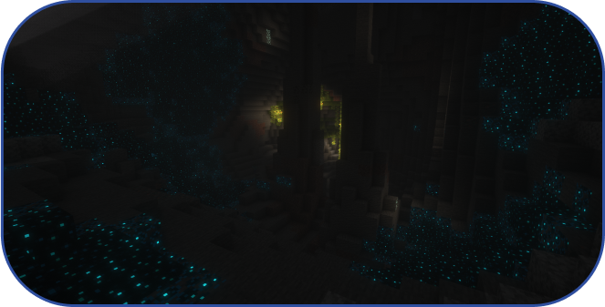
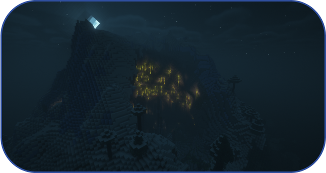

О нас - мы команда хоть и маленькая но очень ответственная. в нашем Discord канале вы можете задать вопросы на которых не нашли ответа или можете нам написать идеи для улучшения нашего Minecraft server. Желаем хорошей игры на нашем сервере!
О нас - мы команда которая пытается сделать хороший и качественный сервер, но не всегда получается. Мы с каждым разом стараемся придумать что-то новое и уникальное. DriveWorlds - это сервер с регулярными повышениями ролей или игрока! Так же, скоро вам предстоит увидеть развлекательные игры (3 сервера и этот один ванильный мир ). Появился вопрос? На нашем Discord сервере есть так называемые "тикеты", с помощью них вы можете задать вопрос по нашему Minecraft серверу. Доступна публикация каких-либо видео проектов.
